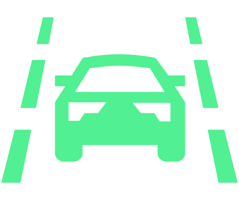
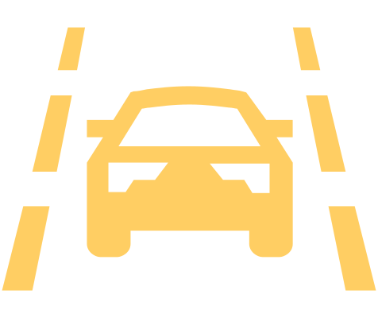

Si le véhicule s'approche d’une ligne de démarcation, le système exécute un légermouvement de braquage dans la direction opposée à la ligne de démarcation. Le braquage être annulé manuellement.
Si le système détecte une inactivité du conducteur ou un braquage inapproprié pendant l’intervention, un message conducteur s’affiche sur l’écran du combiné d’instruments pour l’informer qu’il faut rouler au milieu de la voie ou reprendre le contrôle de la direction.
En l’absence de réaction à l’alerte, l’activation de l’assistant de situation d’urgence Assistant pour les situations d’urgence Emergency Assist est possible selon l’équipement du véhicule.
Véhicules sans système Side Assist : Le système n’intervient pas en cas de changement de voie avec le clignotant.
Véhicules avec le système Side Assist : Si Side Assist avertit lors d’un changement de voie de la présence d’un véhicule qui s’approche à l’aide du témoin lumineux  dans le cache du rétroviseur extérieur, le système intervient même si le clignotant est allumé.
dans le cache du rétroviseur extérieur, le système intervient même si le clignotant est allumé.
Affichage de l’état sur l’écran du combiné d’instruments

est allumé – le système est actif, mais prêt à intervenir


s’allume - Le système est actif et prêt à intervenir

s’allume - Le système intervient

est allumé - le système est désactivé

Indicateur à l'écran
Limite de voie surlignée à droite : Le système intervient en cas d’approche de la ligne de démarcation droite.
Avertissement par vibrations du volant
Les vibrations du volant sont déclenchées dans les situations suivantes :
Le système n’est pas en mesure de maintenir le véhicule sur la voie.
Véhicules sans système Side Assist : Le véhicule franchit la ligne de délimitation alors que le clignotant n’est pas allumé.
Véhicules avec le système Side Assist : Le véhicule franchit la ligne de délimitation alors que le clignotant n’est pas allumé. Si Side Assist avertit de la présence d’un véhicule qui approche à l'aide du témoin
 dans le cache du rétroviseur extérieur, le volant vibre même si le clignotant est activé.
dans le cache du rétroviseur extérieur, le volant vibre même si le clignotant est activé.En cas de vibrations, corriger la direction.